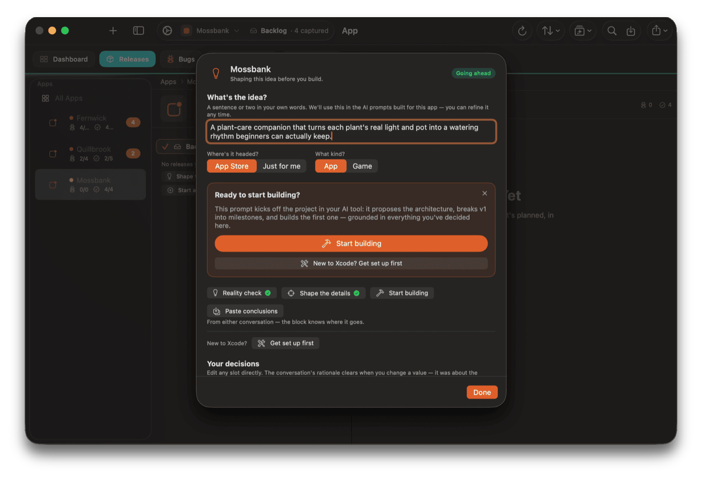
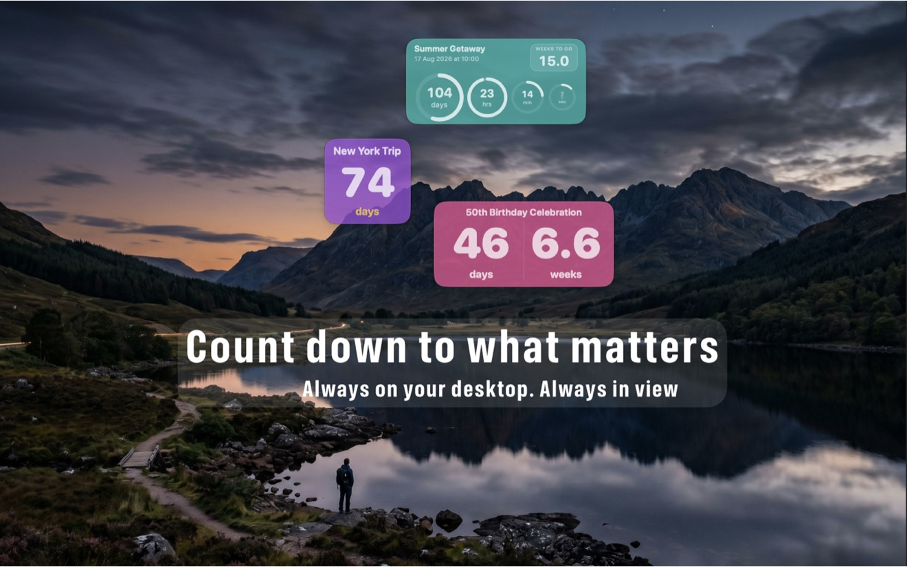

Mac · iPhone · iPad
Shape n Ship
Takes an app from idea to the App Store: reality-check the concept, track bugs and features, prep the release, get through App Review, and promote the launch.

Frowning Gorilla Ltd / United Kingdom
An independent software company, making apps for Mac, iPhone and iPad. Decades of shipping software, now focused on two of our own.
Mac · iPhone · iPad
Takes an app from idea to the App Store: reality-check the concept, track bugs and features, prep the release, get through App Review, and promote the launch.

Mac · iPhone · iPad
Countdowns that live on your desktop, visible while you work rather than tucked away in a menubar. With widgets, and companions for iPhone and iPad.

Decades of shipping software — today focused on Mac, iPhone and iPad.
We build things we want to use ourselves, and that we think other people might find useful too.
About the name
They lack the facial muscles humans use for it. But they still experience the same emotions. They just can't express them that way.
It's a reminder not to judge others by our own capabilities, or assume that people who can't express things the way we do don't feel them just as deeply.